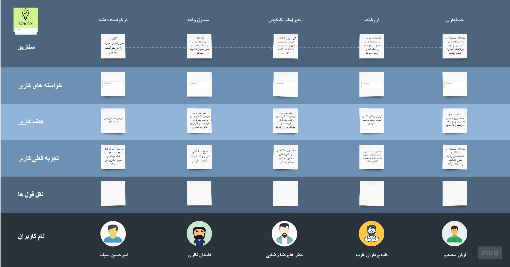
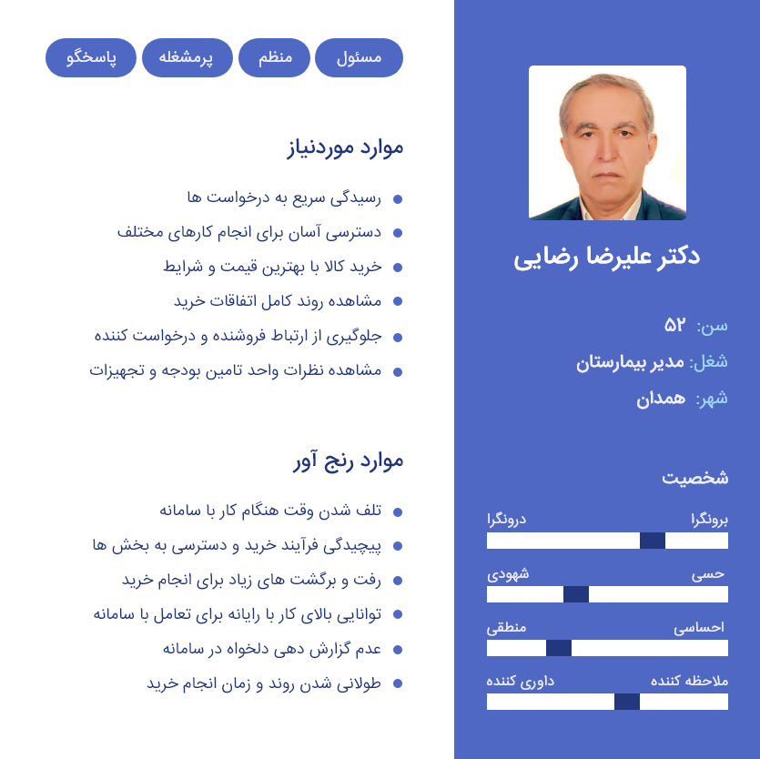
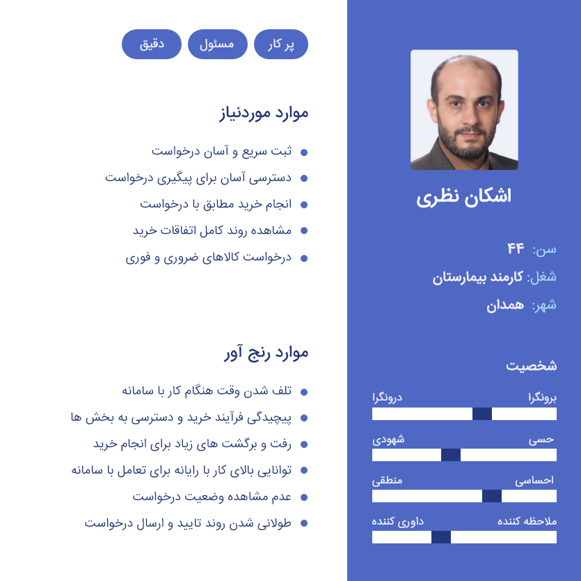

تجربه کاربری
User experience
امیر حسین سیف
بورد داستان کاربر، یک نقشه بصری برای نشان دادن روند انجام پروژه، خواسته های کاربران و خلاصه ای از اهداف و تجربه فعلی کاربران است.
پرسونا، تصویری فرضی و شفاف از ویژگیها، ترجیحات، داشتهها، خواستهها و الگوهای فکری و رفتاری کاربران مختلف است.
پرسونا، تصویری فرضی و شفاف از ویژگیها، ترجیحات، داشتهها، خواستهها و الگوهای فکری و رفتاری کاربران مختلف است.
پرسونا، تصویری فرضی و شفاف از ویژگیها، ترجیحات، داشتهها، خواستهها و الگوهای فکری و رفتاری کاربران مختلف است.
- مصاحبه های فردی
- معماری اطلاعات
- تحلیل سامانه ستاد